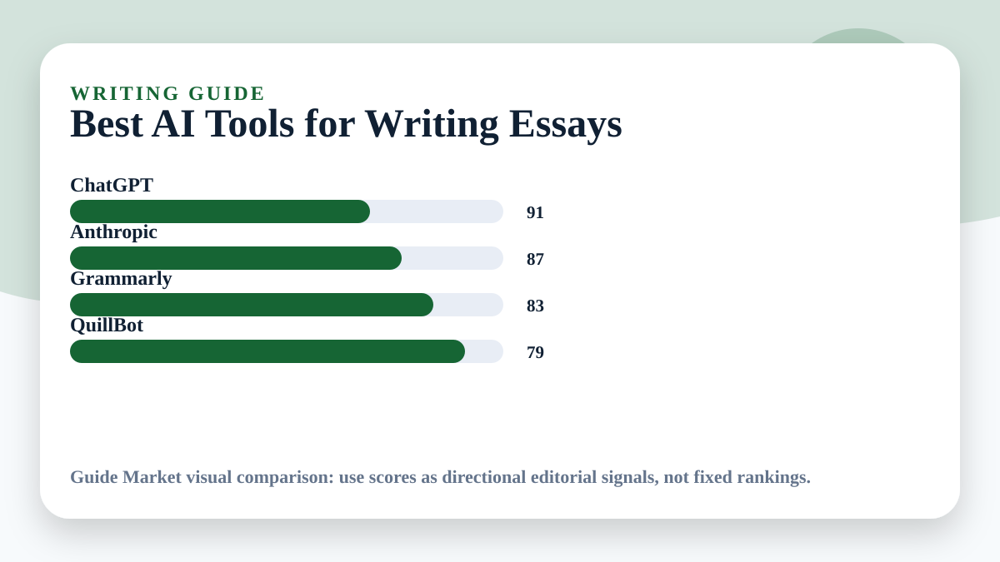

Best AI Tools for Writing Essays
Updated May 11, 2026. Prices and plans change often; always confirm on the official website before paying.
Essay AI is useful when it improves thinking, structure, and clarity. It is harmful when it replaces the work of reading, arguing, and citing. The best tool depends on whether you need planning, drafting, editing, or sentence-level cleanup.

Editorial verdict
My pick: Claude for long essay feedback, ChatGPT for outlining and counterarguments, Grammarly for final polish, and QuillBot only for careful sentence rewriting. I would not use any AI-generated citation without checking it manually.
Quick picks
- Best outline helper: ChatGPT
- Best long-form feedback: Claude
- Best grammar polish: Grammarly
- Best paraphrasing support: QuillBot
Price and feature snapshot
| Tool | Price snapshot | Pros | Cons |
|---|---|---|---|
| ChatGPT Official site | Free plan available; paid plans listed by OpenAI | Brainstorming, outlines, counterarguments | May invent sources or overgeneralize |
| Claude Official site | Free plan and paid plans shown by Anthropic | Long draft review and natural wording | Usage limits can affect big projects |
| Grammarly Official site | Free writing help; paid plans listed officially | Grammar, clarity, tone, citations support depending on plan | Can flatten personal style if accepted blindly |
| QuillBot Official site | Free tools and Premium plan listed officially | Paraphrasing and sentence alternatives | Can create awkward wording if overused |
Academic integrity first
Use AI to ask better questions: What is my thesis? What evidence is weak? What would a critic say? Do not use it to fabricate references or submit work you cannot explain. If your school has AI rules, follow them before any tool recommendation here.
A strong essay workflow
Draft the thesis yourself, ask ChatGPT for counterarguments, use Claude to critique the structure, revise manually, then use Grammarly for final cleanup. QuillBot is useful only when a sentence is clumsy and you want alternatives.
Editorial recommendation
Claude is my favorite for reviewing long essays because the feedback often feels more measured. ChatGPT is better for generating angles quickly. Grammarly is the safest final pass because it focuses on clarity rather than writing the whole essay for you.
Best use cases
- Turning a vague topic into a thesis
- Checking whether paragraphs support the argument
- Improving transitions without changing meaning
- Finding counterarguments before submission